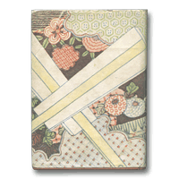

音羽屋をより深く知るための本
音羽屋をより深く知るための本 > 『六代目菊五郎評傳』
渥美清太郎『六代目菊五郎評傳』
（冨山房 1950年）六代目の舞台を克明に追う
演劇の神様とまでうたわれた六代目には、数々の伝記が書かれていますが、生前にまとめられた濱村米蔵の『六代目菊五郎傳（新陽社 1937年）と、年代を追って六代目の舞台を克明に追った本書が、よくその面影を伝えています。
この本を書いた渥美清太郎は、巻頭の「序」で「六代目を神様のようにあがめる人がいる。六代目のしたことなら、なんでも肯定するような人もいる。しかし『評傳』という以上、そんな盲目的なことはできない」と、あらかじめ断っています。
子供時代のいたずらの凄さ、市村座で一躍脚光をあびてから、借金に苦しんで松竹入りする顛末、日本俳優学校のもくろみ違い、晩年の病苦まで、包み隠さず書いています。けれども、客観的な記述を心がけながらも、全体から伝わってくるのは、これほどの名優と同時代に生きることができた幸福感です。
渥美が評価するのは、伝説となった市村座時代ではなく、「やや挫け気味だった精力を取り戻した」東劇時代です。芸域の広い六代目は、『鏡獅子』を毎年のように踊り、『勧進帳』の義経を勤め、『助六』では、助六、揚巻ばかりではなく、白酒売や門兵衛を勤め、「源氏店」では、蝙蝠安に回ります。
「同じ役を度々演じて、洗い上げ磨き上げすることが、まだその意欲の強かった時代だけ、目に見えて藝に深みを加え、技倆をあげていった」六代目の颯爽たる姿が目に浮かぶようです。
もちろん舞台ばかりでありません。「人間菊五郎に対する観察は、自分のつき合った時代の見聞にとどめ」ていますが、俳優学校の教員室で、「お祭佐七」や「め組の辰五郎」、「一本刀土俵入」の取的をめぐる役々についての芸談は、渥美ばかりではなく、周囲をさぞよころばせたでしょう。客観的な記述のなかに、六代目の人間としての滋味が込められています。
Copyright © Otowaya All Rights Reserved.